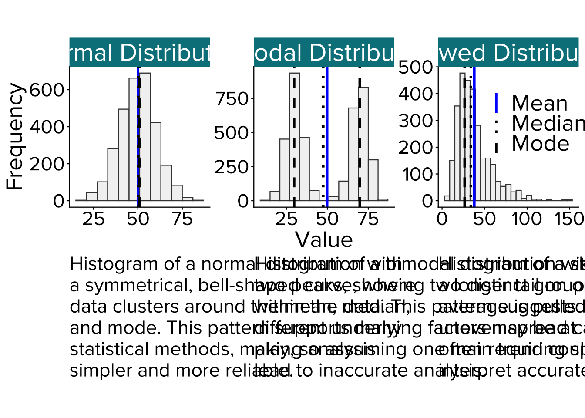

Plots and Figures
In data analysis, visualisations are essential for providing a clear and intuitive understanding of complex data sets. Tools like histograms, box plots, and scatter plots help to uncover patterns, relationships, and trends that may not be immediately apparent from raw data alone. By presenting data graphically, visualisations allow analysts to spot outliers, assess distribution shapes, and interpret the strength and direction of correlations. This section will explore different types of visualisations used in descriptive statistics, explaining their purpose and how they help in drawing meaningful insights from data.
Histograms
Overview: A histogram is a graphical representation of numerical data that organises values into intervals, known as bins, and displays how frequently each value occurs using bars. It provides a straightforward and powerful way to visualise the distribution of data, making it easier to identify patterns, trends, and anomalies.
Histograms are particularly useful for understanding the shape and spread of a dataset. They help assess whether the data follows a normal distribution, with most values clustering around the centre, or if the data is skewed, indicating that values tend to concentrate at one extreme. Additionally, histograms are useful for spotting outliers (values that fall far outside the majority of the data points) which can have a significant impact on statistical analysis.
Interpretation: When interpreting a histogram, focus on the height and position of the bars. Taller bars indicate that many data points fall within a particular range, while shorter bars suggest fewer data points in those intervals.
If the bars are evenly distributed around the centre, the data is likely normally distributed, resembling a bell curve. If the histogram has a rightward tail (longer bars on the right side), it suggests a right-skewed (positively skewed) distribution, where lower values are more frequent. Conversely, a leftward tail indicates a left-skewed (negatively skewed) distribution, where higher values dominate.
Histograms can also reveal distinct subgroups or bimodal distributions if multiple peaks are visible, and they can highlight outliers that fall outside the main concentration of data.
Box Plots

Overview: A box plot, or box-and-whisker plot, is a graphical tool used to summarise the distribution of a dataset by highlighting key statistics, such as the median, quartiles, and potential outliers. It provides a compact yet effective way to visualise data spread and is particularly useful for comparing multiple datasets side by side.
Box plots are especially valuable in exploratory data analysis. They make it easy to identify patterns, detect outliers, and assess the overall distribution of data without requiring extensive numerical summaries. Additionally, they are ideal for evaluating consistency in experimental data, comparing categories, and detecting anomalies, offering a straightforward approach to understanding the structure of a dataset.
Interpretation: A box plot displays the interquartile range (IQR) and provides a visual summary of the dataset’s distribution. The box represents the IQR, containing the middle 50% of the data, with the line inside the box marking the median, or central value. The whiskers extend outward to show the range of most data points, typically bounded by the lower limit (Q1 − 1.5 × IQR) and the upper limit (Q3 + 1.5 × IQR). Any data points that fall outside this range are considered outliers and are displayed as individual dots.
When interpreting a box plot, the position of the median within the box is important. If the median is closer to one end, it suggests a skewed distribution. A longer whisker on one side indicates that the data is more spread out in that direction. Outliers, visible as dots outside the whiskers, highlight unusual data points that may require further examination.
Comparing multiple box plots allows for an assessment of differences in IQR, median placement, and outliers, which can provide insights into the variation between datasets.
Scatter Plots

Overview: A scatter plot is a graphical tool used to visualise the relationship between two numerical variables by displaying individual data points on a Cartesian plane. Each point represents a single observation, with its position determined by the values of both variables—typically plotted along the x-axis (independent variable) and y-axis (dependent variable). This makes scatter plots particularly useful for identifying patterns, correlations, and trends within a dataset.
The primary purpose of a scatter plot is to reveal the relationship between two numerical variables. It helps to identify potential correlations (positive, negative, or none), assess the strength of the relationship, and detect outliers or anomalies. Scatter plots are essential in statistical analysis for exploring relationships, making predictions, and determining whether a linear or non-linear trend exists between variables.
Interpretation: Scatter plots provide key insights into the direction and strength of a relationship between the variables. If the data points tend to form an upward-sloping pattern, it suggests a positive correlation, meaning that as one variable increases, the other also increases. Conversely, a negative correlation is indicated by a downward-sloping pattern, where an increase in one variable corresponds to a decrease in the other. A random scattering of points with no clear pattern suggests there is little to no correlation between the two variables.
The density and spread of the points can also give clues about the relationship’s strength. A tight cluster of points along a clear trend line suggests a strong relationship, whereas a more dispersed pattern points to a weaker relationship. Outliers, or points far removed from the general cluster, can signal unusual observations that may need further examination.